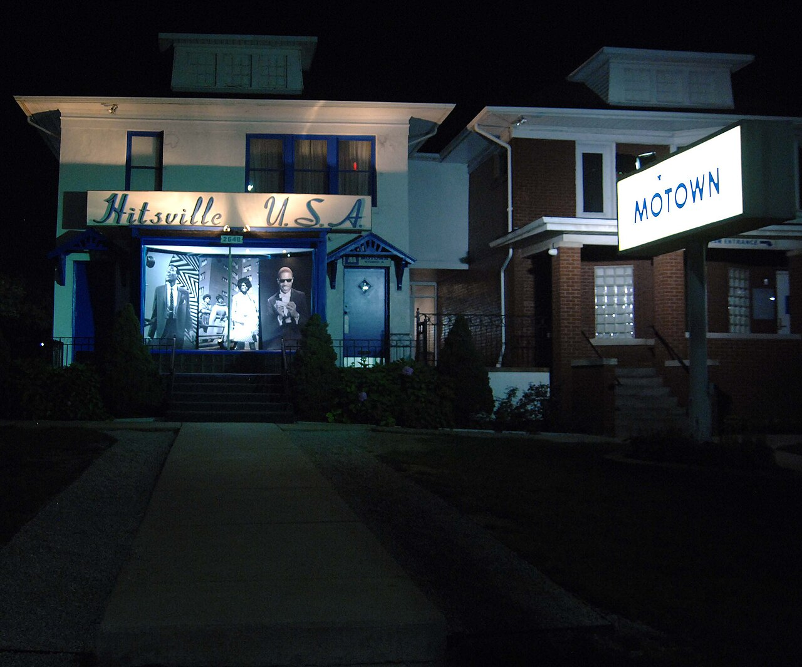
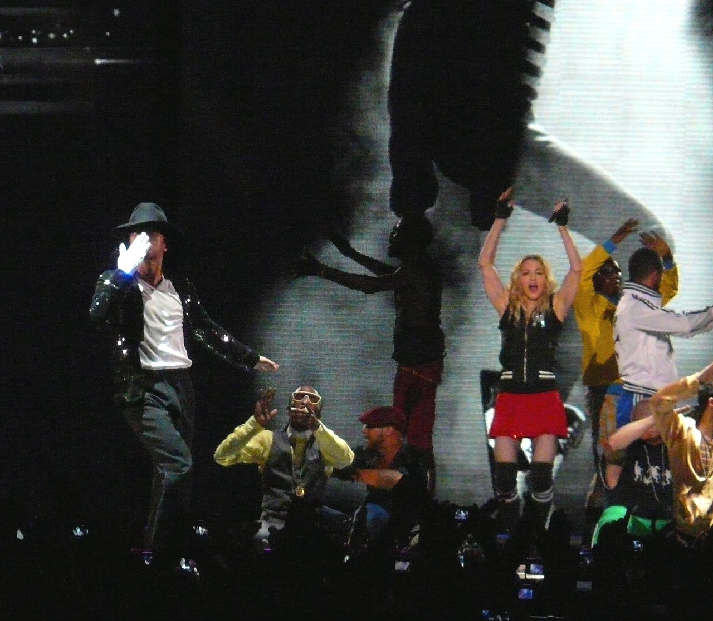

01
Pessoa
Quem foi, o que o marcou e o que decidiu.
Uma vida lida através de três lentes: a Pessoa que foi, a Cultura que o formou e a Comunidade que ele transformou.
Todas as perguntas cabem nestas três colunas.
Quem foi, o que o marcou e o que decidiu.
O contexto que o formou e o que ele devolveu em formatos novos.

As causas, as pessoas inspiradas e as mentalidades que mudaram.

No original inglês, com a fonte ao lado.
“And some people make the path and are pioneers.”
Discurso dos Grammy, 1984 · Grammy.comAo receber o prémio de Álbum do Ano por Thriller.
“On stage for me was home.”
Entrevista a Oprah Winfrey, 1993 · Oprah.comEntrevista emitida a 10 de fevereiro de 1993.
“Before you judge me, try hard to love me.”
«Childhood», HIStory, 1995 · michaeljackson.comLetra composta por Michael Jackson.
Fontes: Grammy.com (1984, 1993) · Oprah.com (1993) · Billboard/AP (2001) · ABC News (2003) · michaeljackson.com (álbuns). Ligações verificadas em outubro de 2026.
Morreu em 2009. A comunidade que construiu continua a produzir.
Cada álbum marca uma nova relação com a música e com quem a ouve.
Foi nos videoclipes que mudou a cultura de forma mais visível.
O guião lista as 31 perguntas e onde cada uma é respondida — o mapa da linha contínua.
Abrir o guião→